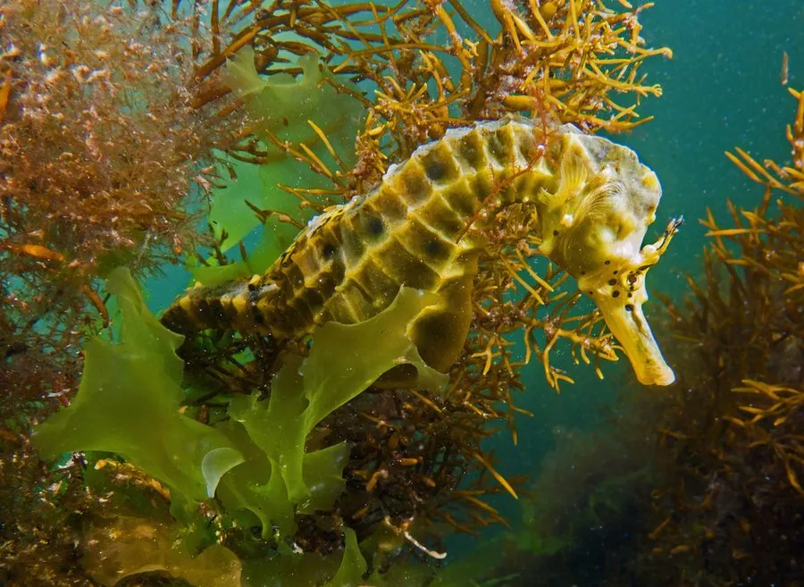

鱼类 · 动物界
大肚海马 Hippocampus abdominalis

体型最大的海马之一，腹部圆鼓、尾部能卷握海藻，雄鱼有育儿袋，分布于澳大利亚和新西兰的温带海域。
- 分类
- 门脊索动物门纲辐鳍鱼纲目海龙目科海龙科属海马属
- 栖息环境
- 温带沿海的海藻床、海草床和岩礁，常缠绕在海藻上
- 地理分布
- 澳大利亚东南部和新西兰沿海
- 保护级别
- IUCN 无危（LC）；澳大利亚和新西兰对捕捞与贸易有管理
物种志
大肚海马是体型最大的海马之一，体长可达 35 cm。它的头部像马，吻部管状，身体侧扁，腹部特别圆鼓，尾部细长并能卷握海藻。体色多为黄褐、灰褐或白色，身上常有深色斑点和突起。
大肚海马分布于澳大利亚东南部和新西兰的温带沿海，栖息在海藻床、海草床和岩礁，常缠绕在海藻上随水流摆动。它用管状吻部吸食小型甲壳类，如糠虾和端足类。繁殖时雌鱼把卵产入雄鱼的育儿袋，由雄鱼孵化并产出幼鱼。大肚海马因外形可爱被大量捕捞用于观赏和水族贸易，加上海草床退化，其种群受到压力。目前 IUCN 评估为无危，但澳大利亚和新西兰都对其贸易和捕捞进行管理。
形态与习性
- 食性小型甲壳类，如糠虾和端足类
- 体长可达 35 cm，是体型最大的海马之一
- 繁殖雌鱼把卵产入雄鱼育儿袋，由雄鱼孵化
- 尾部细长能卷握海藻，帮助固定身体
- 体色黄褐、灰褐或白色，常有深色斑点和突起
- 威胁观赏贸易捕捞和海草床退化
趣味知识
- 大肚海马是体型最大的海马之一，体长可达 35 cm。
- 雄鱼的育儿袋可以容纳数百枚卵，并由它完成孵化。
- 它常把尾巴缠在海藻上，随水流轻轻摆动而不被冲走。